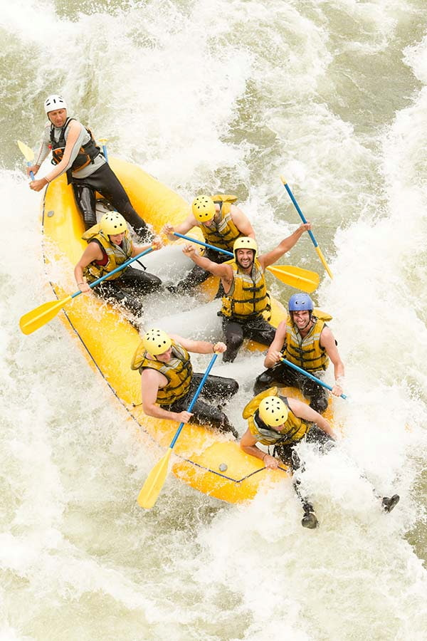

Whitewater rafting is a type of recreation that involves navigating a non-motorized watercraft down free flowing rivers. Dry Oar River Experience trips, provides the watercraft, life jackets, fun, experiences and an amazing staff, and typically offers experienced guides to take passengers down a river. The business intent is to provide the best thrilling and safe experience to individuals and groups.